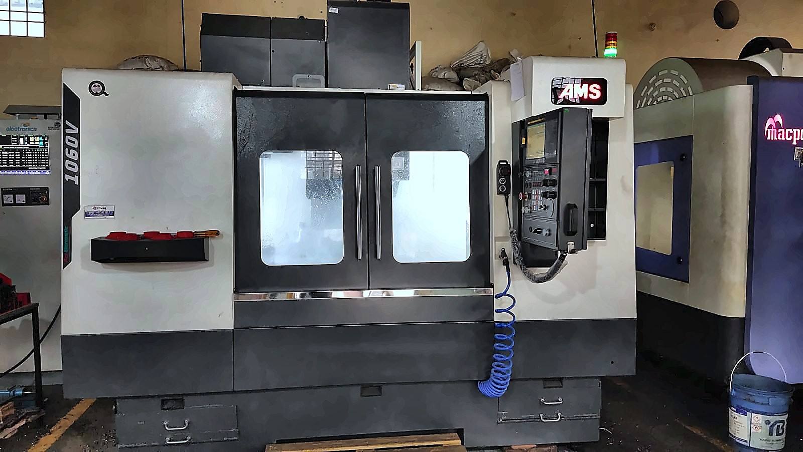
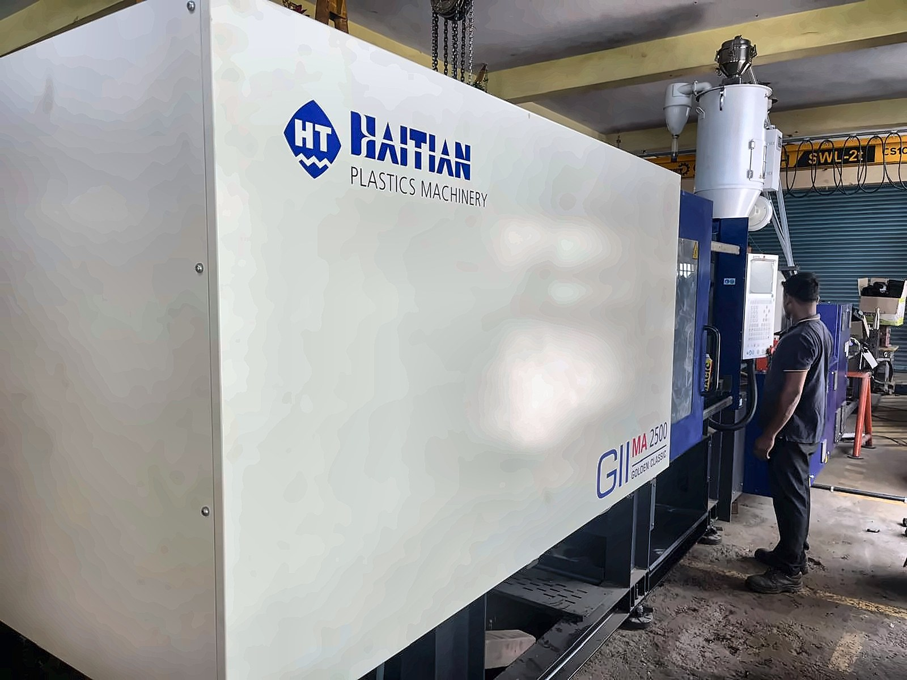
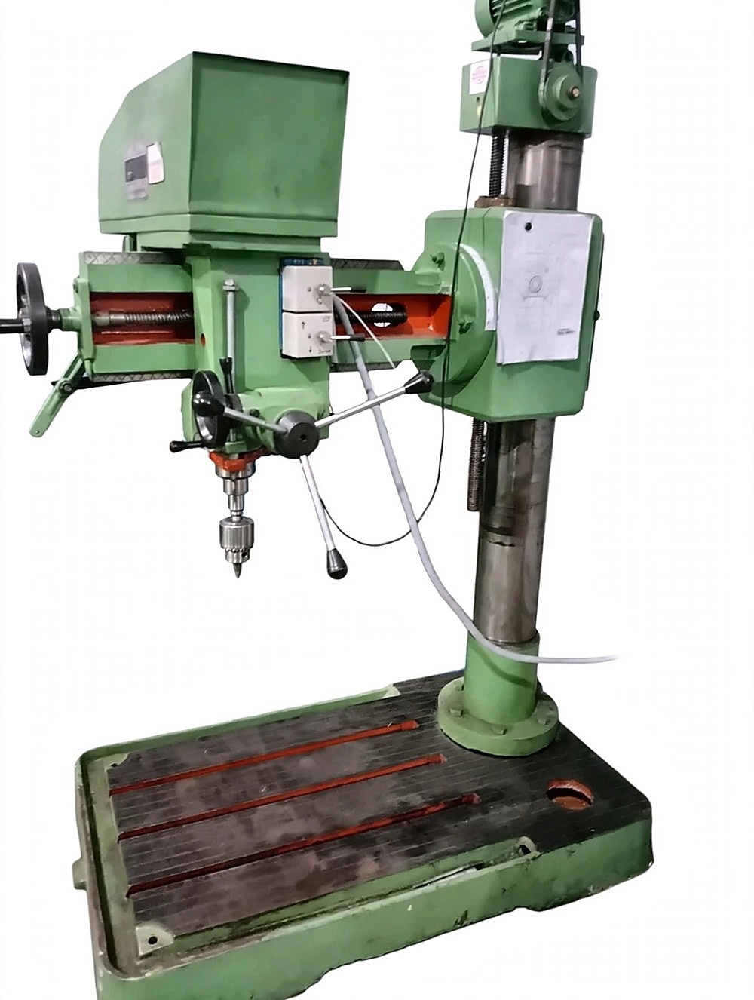
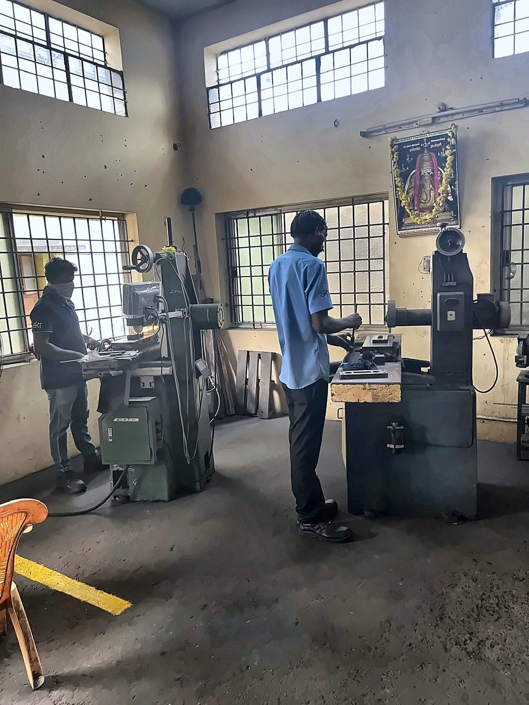
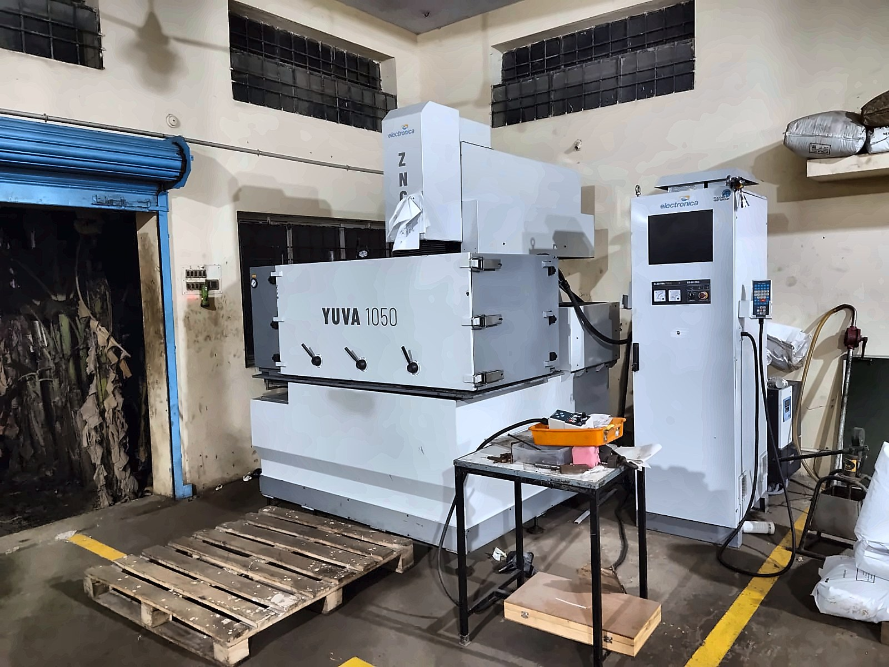
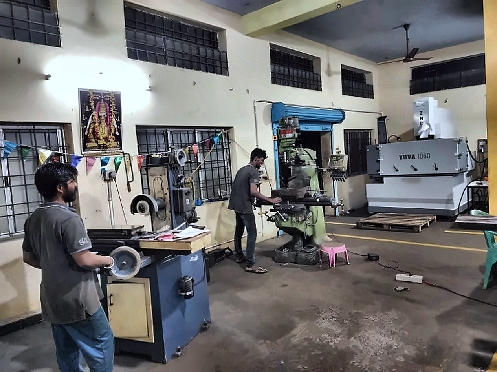

Welcome to Plastic injection moulds
Plastic injection moulds
Three VMCs, two ZNC EDMs and two injection presses, with trusted partners for wire cut, CMM, heat treatment and polishing.
 VMC 1
VMC 1Installed 9 July 2021. Equipped for mould making, with die and mould feature software added to the Fanuc control. Turbulent-flow cooling clears chips.

VMC 2The big-bed machine for large cavities and cores, with a spindle chiller to hold accuracy on long cuts.
 VMC 3
VMC 3Mid-size machining centre equipped for mould making, with die and mould features in the control.
 EDM x 2
EDM x 2Two ZNC EDM machines for burning deep ribs, sharp corners and inserts that milling cannot reach.

Added Mar 2025Our own moulding machine, so every mould is tried and tuned in-house before it ships. Bars show tie-bar spacing and maximum mould height.
 Added Jun 2026
Added Jun 2026A second in-house press for smaller moulds, added in the fourth week of June 2026. Bars show tie-bar spacing and maximum mould height.
Conventional milling, radial drilling and surface grinding sit beside the VMC department, all served by a 2 ton gantry crane.
Hectomark machines for fitting work, drilling and base machining.
Ramanna and Taiwan-make surface grinders, handling work up to 700 mm.
Crane Smith gantry crane for moving mould plates and assembled moulds safely.








Facilities with trusted partners to meet capacity in terms of quality, cost and delivery.
Trial presses from 80 T to 450 T through trusted partners, so any mould can be proven at the right tonnage.
Two wire-cut EDM machines for inserts, slots and precise profiles.
Coordinate measuring and 3D arm scanning to check parts and moulds against the data.
Hardening and surface texturing handled by approved partners.
Two polishing partners for cavity and core finish.
Partners are chosen to match our capacity in quality, cost and delivery.
Ask about VMC job works or trial slots. We will confirm capacity and lead time.